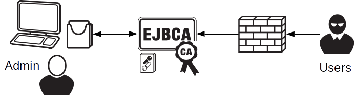
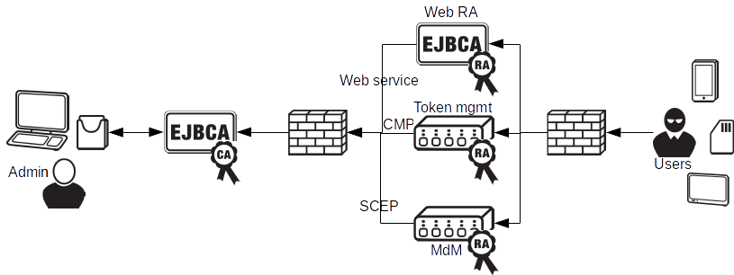
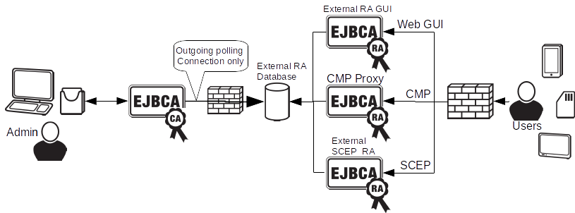
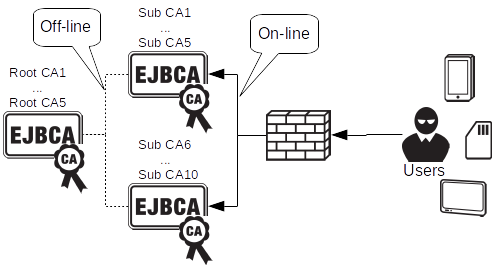
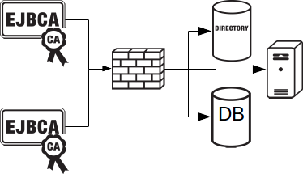
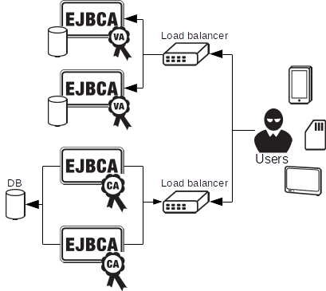
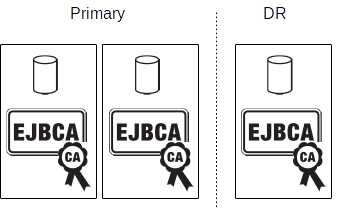

EJBCA Architecture
There are multiple ways that you can implement and architect a PKI solution, ranging from simple and low cost, to very complex and costly. EJBCA allows implementing virtually any type of PKI architecture and the following sections describe a selection of common PKI architectures deployed:
For more information on the internal architecture of EJBCA, see Internal Architecture.
PKI Architecture
Single CA/RA
You can deploy a complete PKI in a single instance. Since EJBCA has everything built in you can have a single instance functioning as both CA and RA. This is a very efficient, easy to manage, and cost effective solution that is suitable for many SME enterprise deployments.
Multiple CAs for different use-cases can co-exist in a single instance and security levels can be scaled with, for example:
-
Administrators can use smart cards or soft tokens for accessing administration interface.
-
The CA can use an HSM or soft tokens for the CA signing keys.
-
Users and machines can be issued with soft tokens or smart cards/USB tokens.
-
Various filtering options can be deployed in firewalls.

For more information on creating a CA with EJBCA, see EJBCA User Guide.
Protecting CA Signature keys
In the image above CA signature keys are kept in a separate Crypto Token. For installations where a certain level of trust, and security, is required, this Crypto Token will be in the form of a Hardware Security Module. In installations where security is not of the highest concern, where the organization policy does not mandate it, where cost is an important factor, or when security can be managed through other means, a soft Crypto Token, i.e. a file in the database protected only by a passphrase, can be used.
For more information on working with HSMs using EJBCA, see Hardware Security Modules (HSM).
For more information on PKI Appliance with a built-in HSM, refer to PrimeKey PKI Appliance.
CA with distributed RAs
To set up a PKI capable of enrolling a diverse set of users and devices, it is usually necessary introduce multiple types of RAs, for different purposes. Using EJBCA you can connect unlimited amount of distributed RAs, communicating with the CA using standard protocols like CMP, SCEP and Web service. The RAs can be in the form of EJBCA components, custom developed RAs, or standard products such as MdM or token management products. Security levels can be scaled up and down as in the previous example, and RAs can use different authentication means such as shared secrets, client certificate authentication etc. The CA employs role based access control to decide what each RA have access to perform. Multiple CAs can be easily configured to serve different purposes (VPN, MdM, TLS, etc).
Different protocols suitable for RA operations are:

External RA, only outgoing connections
ENTERPRISE EDITION This is an EJBCA Enterprise Edition (EE) feature.
One way of insulating the CA, for security reasons, while still allowing flexible enrollment from entities, is to use the External RA. Using this architecture an external RA server receives certificate (and revocation) requests, which are stored in a separate database. The request are periodically pulled by the CA and responses returned to the External RA database where they are picked up by the external RA server. No incoming network traffic is allowed from the CA, only outgoing connections are allowed through the CA firewall for polling. The External RA can still support multiple protocols such as:
-
CMP using an external RA backend of the CMP Proxy.
-
SCEP using the external RA SCEP server.
-
Web GUI enrollment using the external RA GUI.
-
Custom protocols or methods developed on top of the external RA API.

Off-line Root CA and multiple Sub CAs
A common model within PKI is to use a secured, off-line, Root CA with subordinate, on-line, issuing CAs. Using EJBCA you can easily deploy such an architecture with multiple Root CAs and issuing SubCAs.
All discussed enrollment methods and interfaces are available to the issuing CAs.

Multi-level PKI architectures
You can extend the architecture with as many levels of Sub CAs as you like, creating 3 or 4 tier architectures. One and two level architectures are very common. Three level architectures are also regularly used, albeit slightly less common. More than 3 levels are rarely used, unless there is some legacy purpose that needs to be worked around. Each additional level of CAs in the architecture will require clients to do an additional certificate verification and validation when verifying a leaf node certificate.
Validation Authority
Any decent size PKI solution can't live without certificate validation to check certificate revocation. EJBCA has built in Validation Authority (VA), meaning that the Single CA/RA setup comes with complete certificate validation capabilities. When setting up a larger PKI however you typically want to separate the validation authority from the certificate authority. There are several reasons for this where security is the most prominent, but other factors such as performance and organizational factors also play a role. Using a separate Validation Authority you can serve multiple PKIs from a single VA. You can publish revocation information in real time, also called white listing, or using CRLs for periodical revocation updates.

Enterprise Integration
Since PKI is really a security infrastructure, it needs to be integrated fitting the security needs of the organization, and use case. Each use case and organization have their own special needs making integration truly universal. One integration point that regularly occurs is integration with corporate directories or databases. EJBCA can publish information to directories, databases or other servers, using Publishers. One interesting case of publishing that is recently standardized is Certificate Transparency.

Cluster and High Availability
The more mission critical the PKI infrastructure becomes, the more need for high availability and clustering. EJBCA, both CA and VA, can easily be clustered for availability and performance. The PKI architecture itself does not differ between clustered and non clustered operations, but there are more servers involved.

Primary and Disaster Recovery site
In mission critical PKIs it is also common to set up the system with a primary site and a disaster recovery (DR) site. During normal operations traffic is directed to the primary site, which contains a clustered configuration as in the previous picture. All data is replicated to a disaster recovery site, holding a mirror of the primary site (commonly with slightly less capacity for cost reasons). If there is a major problem (disaster) with the primary site, traffic is redirected to the disaster recovery site and operations can continue while the primary site is being rebuilt.
It is technically possible to build a system where both the primary and DR site can be fully operational at the same time. But in practice this is less common.

Clustering for High Availability and Disaster Recovery can easily be set up using the PKI Appliance, as described in the blog post High Availability for PKI in 8 Simple Steps.
Audited Operations
Finally to beef it up for fully audited trust center architecture, you will separate more functions into separate components and introduce more role based access to different part of the system. Some characteristics of such a system is:
-
Separated Root CAs and Issuing CAs.
-
Signed audit logs, log aggregation in separate log servers.
-
Separate database instances, with integrity protected database content (role separation between DBA and CA operators).
-
Separate Validation Authorities.
-
Separate network segments for all different components.
-
Monitoring and intrusion detection.
-
and more...
Automated and Large Scale Operations
In many modern use cases (often coined IoT, Industry 4.0 etc) you really want to have automated industrial processes, in some cases very high speed and with huge volumes. All the integration interfaces named above, CMP, Web service and SCEP are suitable for automated operations. In EJBCA you can configure a multitude of options for different levels of automation, different trust models and policies, etc. Finding the right options you can integrate with virtually everything, issuing certificates for anything.
Since EJBCA uses standard relational databases, suitable for large scale and high performance you can easily scale EJBCA to hundreds of millions issued certificates, and with some care even billions. Depending on the architecture and interfaces chosen you can reach very low latency (sub 100ms) and very high throughput (>100 certs/sec).
For more information, see Maximizing Performance.
Software or Appliance, Virtual or Physical
Deploying a PKI issuing properly populated certificates, and with the correct security level (using HSMs etc) can be a daunting task if you have not done it before. Using EJBCA you can deploy most of the architectures above using EJBCA as a software, or packaged as a turn key PKI Appliance from PrimeKey.